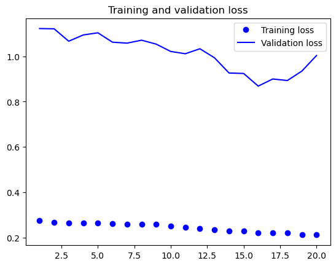
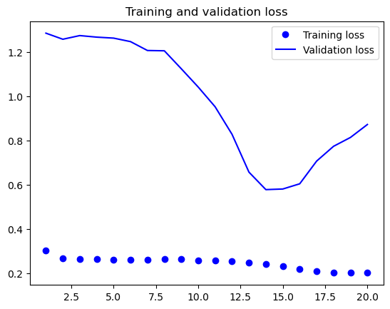
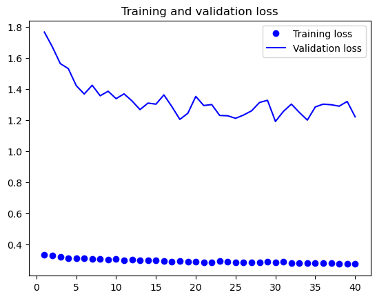
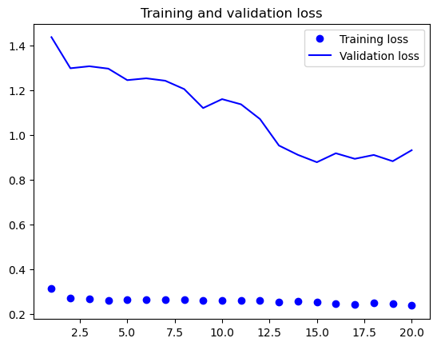
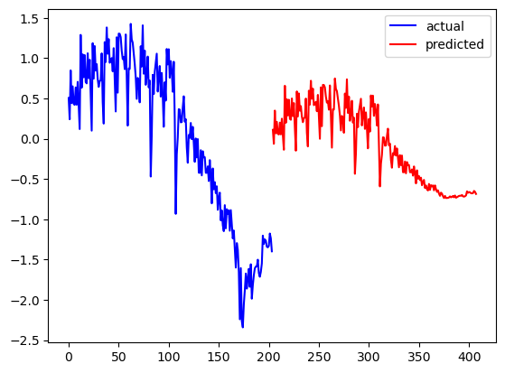

import pandas as pd
import numpy as npDeep Learning for Time Series
Let’s fit three deep learning models to the overall arrests time series.
Setup
- Imports
- Read in data
Code
f = open("data/arrests_by_date.csv")
data = f.read()
f.close()
lines = data.split('\n')
header = lines[0].split(',')
lines = lines[1:]- Parse data
Code
import numpy as np
float_data = np.zeros((len(lines), len(header) - 1))
for i, line in enumerate(lines):
values = [float(x) for x in line.split(',')[1:]]
float_data[i, :] = values
# normalizing the data
mean = float_data[:200000].mean(axis=0)
float_data -= mean
std = float_data[:20000].std(axis=0)
float_data /= std- Create a generator for samples and targets
Code
# generator yielding timeseries samples and their targets
def generator(data, lookback, delay, min_index, max_index,
shuffle=False, batch_size=128, step=6):
if max_index is None:
max_index = len(data) - delay - 1
i = min_index + lookback
while 1:
if shuffle:
rows = np.random.randint(
min_index + lookback, max_index, size=batch_size)
else:
if i + batch_size >= max_index:
i = min_index + lookback
rows = np.arange(i, min(i + batch_size, max_index))
i += len(rows)
samples = np.zeros((len(rows),
lookback // step,
data.shape[-1]))
targets = np.zeros((len(rows),))
for j, row in enumerate(rows):
indices = range(rows[j] - lookback, rows[j], step)
samples[j] = data[indices]
targets[j] = data[rows[j] + delay][0]
yield samples, targets- Preparing the training, validation, and test generators
Code
# preparing the training, validation, and test generators
lookback = 36
step = 12
delay = 24
batch_size = 24
train_gen = generator(float_data,
lookback=lookback,
delay=delay,
min_index=0,
max_index=100,
shuffle=True,
step=step,
batch_size=batch_size)
val_gen = generator(float_data,
lookback=lookback,
delay=delay,
min_index=101,
max_index=150,
step=step,
batch_size=batch_size)
test_gen = generator(float_data,
lookback=lookback,
delay=delay,
min_index=151,
max_index=None,
step=step,
batch_size=batch_size)
val_steps = (151 - 101 - lookback) # how many steps to draw from val_gen in order to see the entire validation set
test_steps = (len(float_data) - 151 - lookback) # how many steps to draw from test_gen in order to see the entire test set# computing the common-sense baseline MAE
def evaluate_naive_method():
batch_maes = []
for step in range(val_steps):
samples, targets = next(val_gen)
preds = samples[:, -1, 0]
mae = np.mean(np.abs(preds - targets))
batch_maes.append(mae)
print(np.mean(batch_maes))
evaluate_naive_method()
print(1.217 * std[0])1.2171689202817748
10131.209167107394We have a mean absolute error of 10,131.21 arrests each month.
RNN
Code
# insert rnn model
# training and evaluating an LSTM model
from keras.models import Sequential
from keras import layers
from keras.optimizers import RMSprop
from tensorflow.keras.metrics import RootMeanSquaredError
model = Sequential()
model.add(layers.SimpleRNN(32, input_shape=(None, float_data.shape[-1])))
model.add(layers.Dense(1))
model.compile(optimizer=RMSprop(), loss='mae', metrics=RootMeanSquaredError())
history = model.fit_generator(train_gen,
steps_per_epoch=500,
epochs=20,
validation_data=val_gen,
validation_steps=val_steps)
rnn_rmse = history.history['val_root_mean_squared_error']
There is a significant gap between training and validation loss, suggesting overfitting is occuring.
GRU
Code
# training and evaluating a GRU-based model
from keras.models import Sequential
from keras import layers
from keras.optimizers import RMSprop
model = Sequential()
model.add(layers.GRU(32, input_shape=(None, float_data.shape[-1])))
model.add(layers.Dense(1))
model.compile(optimizer=RMSprop(), loss='mae', metrics=RootMeanSquaredError())
history = model.fit_generator(train_gen,
steps_per_epoch=500,
epochs=20,
validation_data=val_gen,
validation_steps=val_steps)
gru_rmse = history.history['val_root_mean_squared_error']
Eventually, around epoch 14, the gap between training and validation loss becomes fairly small, at least smaller than the first RNN model. This is a good sign, and means we may not be overfitting in this model. However, early stopping might be useful here as validation loss increases after that point while the trainin loss does not. This GRU model was useful, we should attempt to fit a dropout-regularized GRU model.
Dropout-regularized GRU
Code
# training and evaluating a GRU-based model
from keras.models import Sequential
from keras import layers
from keras.optimizers import RMSprop
model = Sequential()
model.add(layers.GRU(32,
dropout=0.2,
recurrent_dropout=0.2,
input_shape=(None, float_data.shape[-1])))
model.add(layers.Dense(1))
model.compile(optimizer=RMSprop(), loss='mae', metrics=RootMeanSquaredError())
history = model.fit_generator(train_gen,
steps_per_epoch=500,
epochs=40,
validation_data=val_gen,
validation_steps=val_steps)
rgru_rmse = history.history['val_root_mean_squared_error']
This one looks worse than the previous model, there is more evidence of overfitting.
LSTM
Code
# training and evaluating an LSTM model
from keras.models import Sequential
from keras import layers
from keras.optimizers import RMSprop
from tensorflow.keras.metrics import RootMeanSquaredError
model = Sequential()
model.add(layers.LSTM(32, input_shape=(None, float_data.shape[-1])))
model.add(layers.Dense(1))
model.compile(optimizer=RMSprop(), loss='mae', metrics=[RootMeanSquaredError()])
history = model.fit_generator(train_gen,
steps_per_epoch=500,
epochs=20,
validation_data=val_gen,
validation_steps=val_steps)
ltsm_rmse = history.history['val_root_mean_squared_error']
The output of this model looks similar to the original RNN model. The gap between training and validation loss is large, suggesting overfitting. The GRU model was by far the best model.
Comparison
Code
print(f"RNN RMSE: {round(min(rnn_rmse), 4)} at epoch {rnn_rmse.index(min(rnn_rmse)) +1}")
print(f"GRU RMSE: {round(min(gru_rmse), 4)} at epoch {gru_rmse.index(min(gru_rmse)) +1}")
print(f"Dropout-Regularized GRU RMSE: {round(min(rgru_rmse), 4)} at epoch {rgru_rmse.index(min(rgru_rmse)) +1}")
print(f"LSTM RMSE: {round(min(ltsm_rmse), 4)} at epoch {ltsm_rmse.index(min(ltsm_rmse)) +1}")RNN RMSE: 0.9021 at epoch 18
GRU RMSE: 0.6959 at epoch 14
Dropout-Regularized GRU RMSE: 1.2831 at epoch 28
LSTM RMSE: 0.9617 at epoch 17This validates what we saw earlier, GRU appears to be the best model at epoch 14. However, this is still lower than the RMSE of our SARIMA(1, 1, 1)(1, 1, 1)12 model fitted earlier, as that had an RMSE of 0.3043.
Forecasting
predictions = model.predict(float_data)
future_timestamps = np.arange(len(float_data), len(float_data) + len(predictions))
plt.plot(float_data, label = 'actual', color = 'blue')
plt.plot(future_timestamps, predictions, label='predicted', color='red')
plt.legend()
plt.show()7/7 [==============================] - 0s 499us/step
It appears that the predicted values are above the current rate, meaning the current arrests rate is lower than it should be.